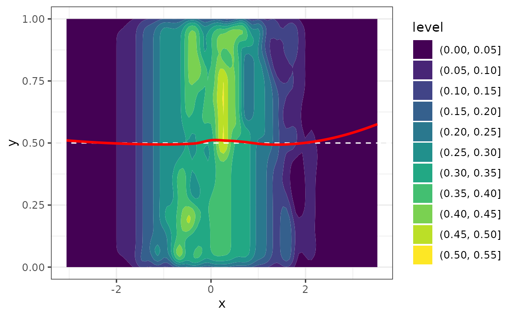

Introduction to the funres package
intro.RmdWARNING: This vignette is very much a work in progress and is subject to change as the package evolves!
First, let’s simulate some ordinal data:
set.seed(3)
x1 <- rnorm(1000, mean = 0, sd = 1)
x2 <- x1 ^ 2
eta1 <- 1.5*x1 - x2
eta2 <- 1.5 + 1.5*x1 - x2
eta3 <- -1 + 1.5*x1 - x2
eta4 <- 1 + 1.5*x1 - x2
p1 <- 1/(1+exp(-eta1)+exp(-(eta1+eta2))+exp(-(eta1+eta2+eta3))+exp(-(eta1+eta2+eta3+eta4)))
p2 <- exp(-eta1)/(1+exp(-eta1)+exp(-(eta1+eta2))+exp(-(eta1+eta2+eta3))+exp(-(eta1+eta2+eta3+eta4)))
p3 <- exp(-(eta1+eta2))/(1+exp(-eta1)+exp(-(eta1+eta2))+exp(-(eta1+eta2+eta3))+exp(-(eta1+eta2+eta3+eta4)))
p4 <- exp(-(eta1+eta2+eta3))/(1+exp(-eta1)+exp(-(eta1+eta2))+exp(-(eta1+eta2+eta3))+exp(-(eta1+eta2+eta3+eta4)))
p5 <- exp(-(eta1+eta2+eta3+eta4))/(1+exp(-eta1)+exp(-(eta1+eta2))+exp(-(eta1+eta2+eta3))+exp(-(eta1+eta2+eta3+eta4)))
pr <- cbind(p1, p2, p3, p4, p5)
y <- c()
for (i in 1:length(x1)) {
y[i] <- sample(c(1, 2, 3, 4, 5), size = 1, replace = TRUE, prob = pr[i,])
}
df <- data.frame(x1, x2, y)Next, we’ll fit an adjacent categories regression model:
fit <- vglm(y ~ x1 + x2, data = df, family = acat(reverse = TRUE, parallel = TRUE))
#> Warning in checkwz(wz, M = M, trace = trace, wzepsilon = control$wzepsilon): 2
#> diagonal elements of the working weights variable 'wz' have been replaced by
#> 1.819e-12
#> Warning in checkwz(wz, M = M, trace = trace, wzepsilon = control$wzepsilon): 10
#> diagonal elements of the working weights variable 'wz' have been replaced by
#> 1.819e-12
#> Warning in checkwz(wz, M = M, trace = trace, wzepsilon = control$wzepsilon): 28
#> diagonal elements of the working weights variable 'wz' have been replaced by
#> 1.819e-12
#> Warning in checkwz(wz, M = M, trace = trace, wzepsilon = control$wzepsilon): 37
#> diagonal elements of the working weights variable 'wz' have been replaced by
#> 1.819e-12
#> Warning in checkwz(wz, M = M, trace = trace, wzepsilon = control$wzepsilon): 37
#> diagonal elements of the working weights variable 'wz' have been replaced by
#> 1.819e-12
summary(fit)
#>
#> Call:
#> vglm(formula = y ~ x1 + x2, family = acat(reverse = TRUE, parallel = TRUE),
#> data = df)
#>
#> Coefficients:
#> Estimate Std. Error z value Pr(>|z|)
#> (Intercept):1 -0.03430 0.10221 -0.336 0.737
#> (Intercept):2 1.18243 0.15518 7.620 2.54e-14 ***
#> (Intercept):3 -0.67463 0.16056 -4.202 2.65e-05 ***
#> (Intercept):4 0.89478 0.14284 6.264 3.75e-10 ***
#> x1 1.61480 0.09665 16.707 < 2e-16 ***
#> x2 -1.04286 0.06774 -15.396 < 2e-16 ***
#> ---
#> Signif. codes: 0 '***' 0.001 '**' 0.01 '*' 0.05 '.' 0.1 ' ' 1
#>
#> Names of linear predictors: loglink(P[Y=1]/P[Y=2]), loglink(P[Y=2]/P[Y=3]),
#> loglink(P[Y=3]/P[Y=4]), loglink(P[Y=4]/P[Y=5])
#>
#> Residual deviance: 2031.804 on 3994 degrees of freedom
#>
#> Log-likelihood: -1015.902 on 3994 degrees of freedom
#>
#> Number of Fisher scoring iterations: 7
#>
#> No Hauck-Donner effect found in any of the estimates
#>
#>
#> Exponentiated coefficients:
#> x1 x2
#> 5.0268945 0.3524438Finally, we’ll compute the functional residuals and construct a functional residual-vs-predictor plot.
fr <- fresiduals(fit)
head(fr)
#> [,1] [,2]
#> [1,] 0.171904759 1.00000000
#> [2,] 0.396681368 0.74813270
#> [3,] 0.000000000 0.46054607
#> [4,] 0.001952785 0.08884917
#> [5,] 0.000000000 0.43028185
#> [6,] 0.330560589 0.65672221
class(fr)
#> [1] "fresiduals" "matrix" "array"
frplot(fr, x = df$x1)
#> `geom_smooth()` using formula = 'y ~ x'